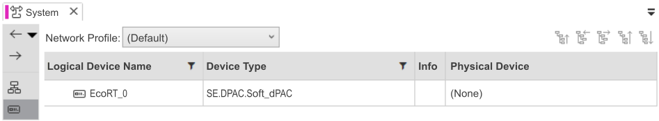

Setting the Logical Devices
The first step before deploying the application is to set up the logical device available in the Logical Devices editor of the System Editor.
The default logical device name is EcoRT_0. Its device type is SE.DPAC.Soft_dPAC.

|
NOTE:
It means that this logical device uses the runtime software to connect the build time application to a software application on a workstation. |

|
|
NOTE:
Currently, the Network Profile is set to Default and EcoRT_0 has no physical device connected to it. |
As this Getting Started application is a simulation, set to Local Test the Network Profile.
Then, the Physical Device column of EcoRT_0 switches to Simulation.
|
|
NOTE:
In a none simulated solution, here are the steps to follow:
These steps are not necessary for this Getting Started application. |